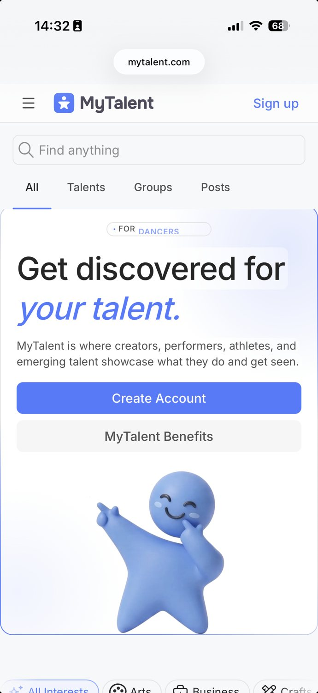
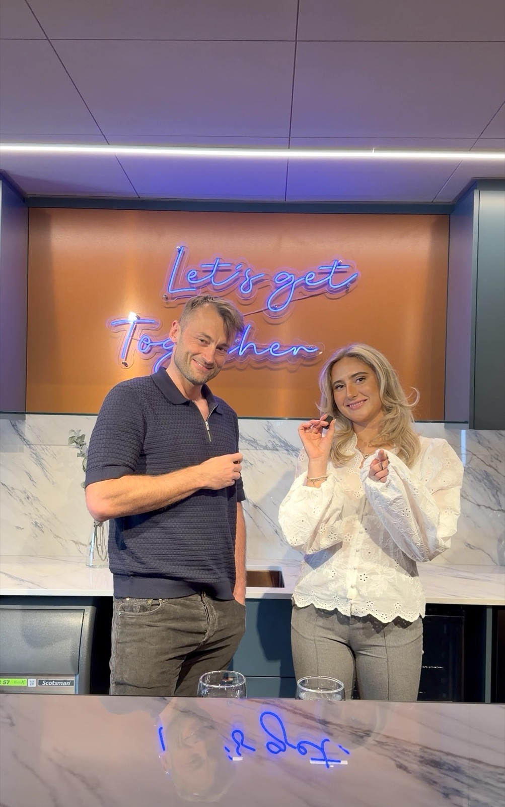

MyTalent – brukeropplevelsen i en digital talentplattform
En talentplattform på mobil og web. Jeg ledet designteamet fram mot lansering og i videreutviklingen (2025–2026), og var ansvarlig for brukertesting.

Interaksjonsdesign
Som Interaction Specialist jobbet jeg med brukerreiser, informasjonsarkitektur, navigasjon, onboarding og microcopy – designet og prototypet i Figma, for både mobil og web.

Brukertesting
Som ansvarlig for brukertesting planla og gjennomførte jeg testene, analyserte tilbakemeldingene og gjorde funnene om til konkrete forbedringsforslag til teamet.

Team og ledelse
Som Delivery Manager ledet jeg designteamet, fordelte oppgaver og fulgte opp leveranser. Jeg var bindeleddet mellom designerne og ledelsen: oversatte behov og tilbakemeldinger til konkrete designoppgaver, og sørget for felles forståelse av retning og prioriteringer.

Hva jeg lærte
Små detaljer – en knappetekst, et tomt skjermbilde, et steg i onboardingen – avgjør ofte om folk kommer i gang. Og funn fra brukertester får mest effekt når de deles tidlig og konkret med hele teamet.